FORMA · matched production captures
21 actual production BEFORE/AFTER pairs at 320, 390 and 1440px. The final staging set remains a separate supporting phase. Original PNG bytes are unchanged; select an image to inspect its original file.
BEFORE identifies the observed Worker and native asset hashes; its frontend Git source is unverified. AFTER is the verified af8f476 build on production Worker 3a5980c7-d697-49b0-bd23-d4a5cd808631. The narrow copy/emblem issue is visible in BEFORE and clear in AFTER. A changed image hash alone is not a visual regression finding.
320px · auth-signin

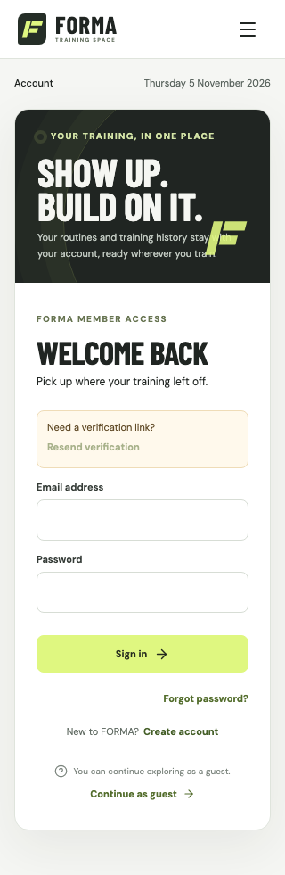

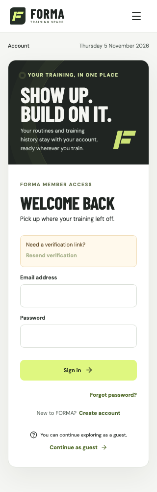
320px · auth-signup

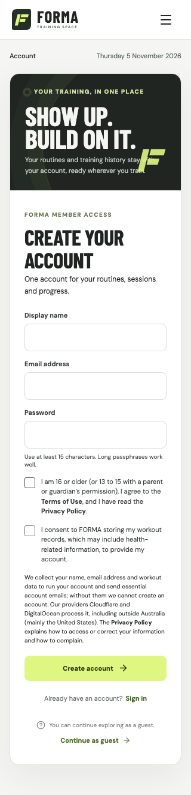

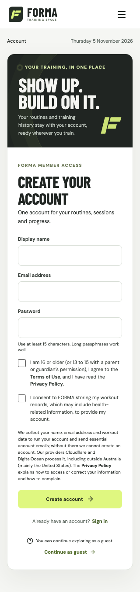
320px · auth-forgot

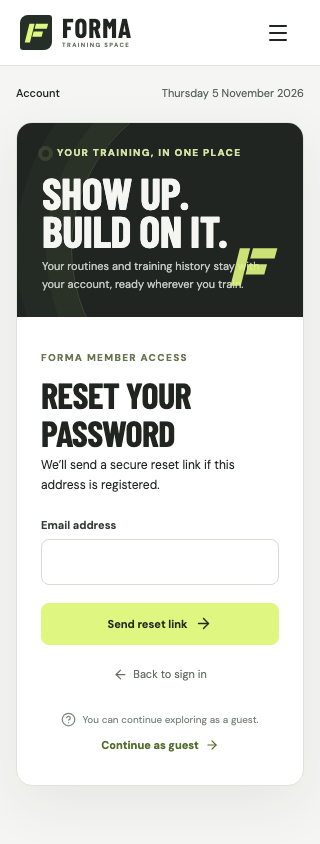

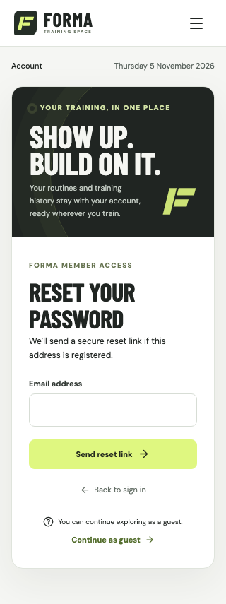
320px · overview


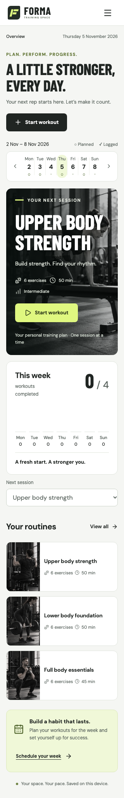
320px · library


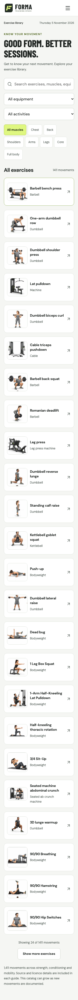
320px · progress

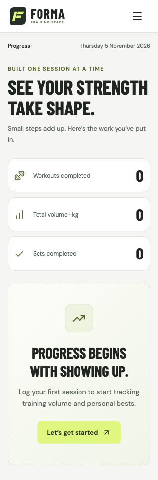

320px · privacy

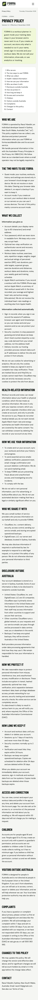

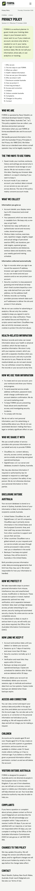
390px · auth-signin


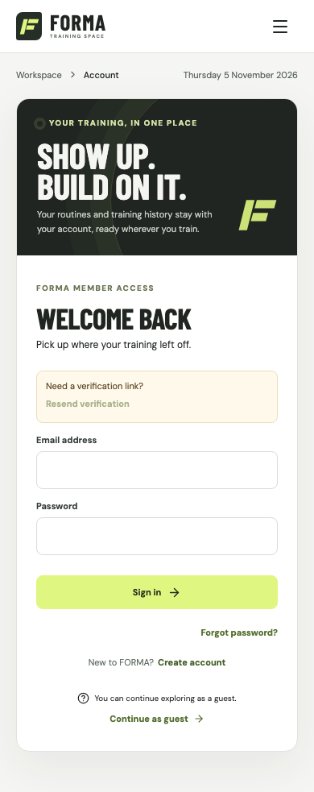
390px · auth-signup


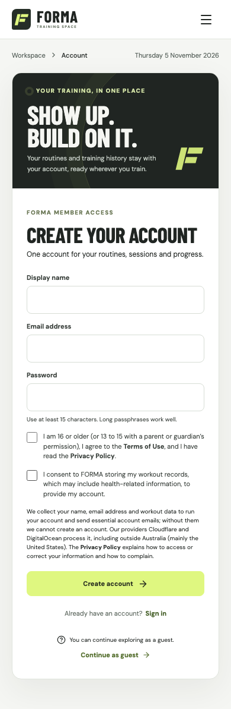
390px · auth-forgot

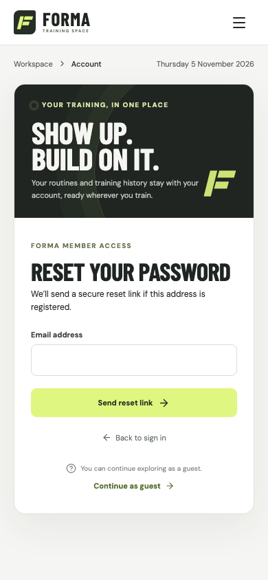

390px · overview


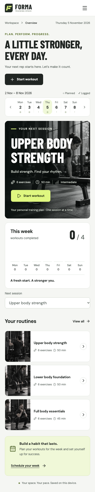
390px · library


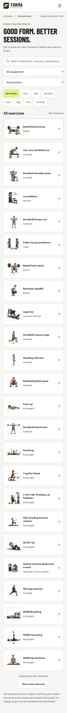
390px · progress


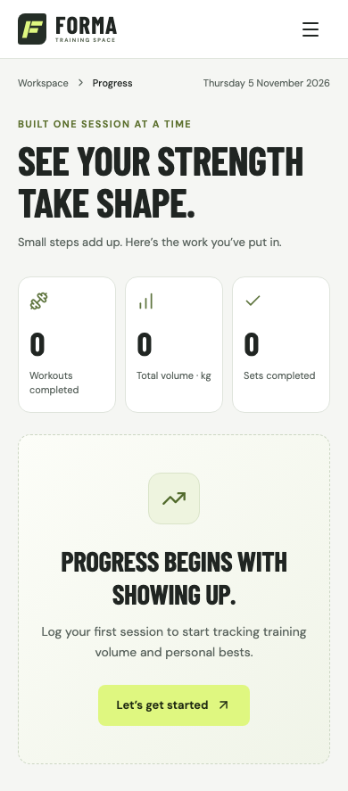
390px · privacy

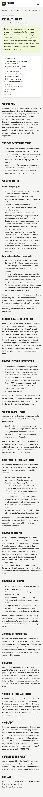

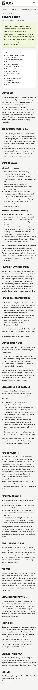
1440px · auth-signin

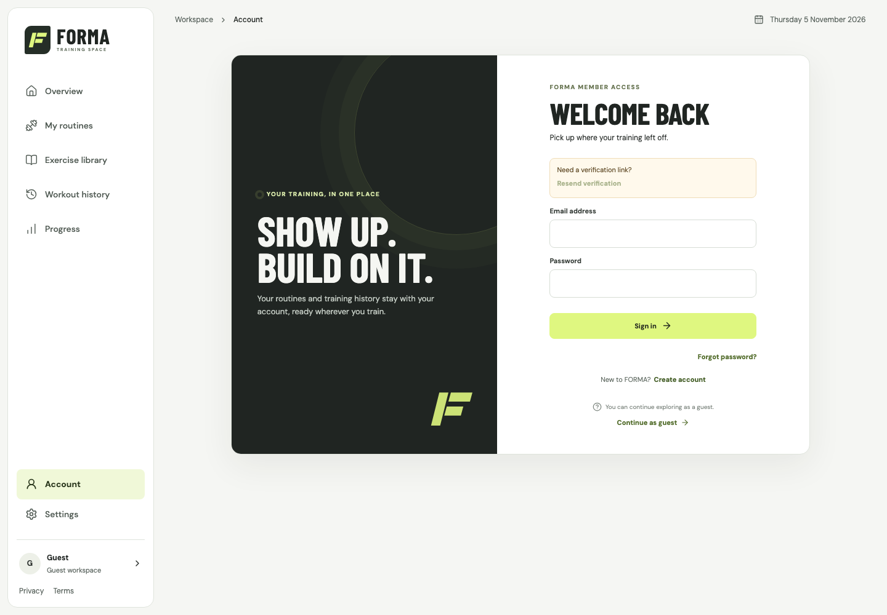

1440px · auth-signup


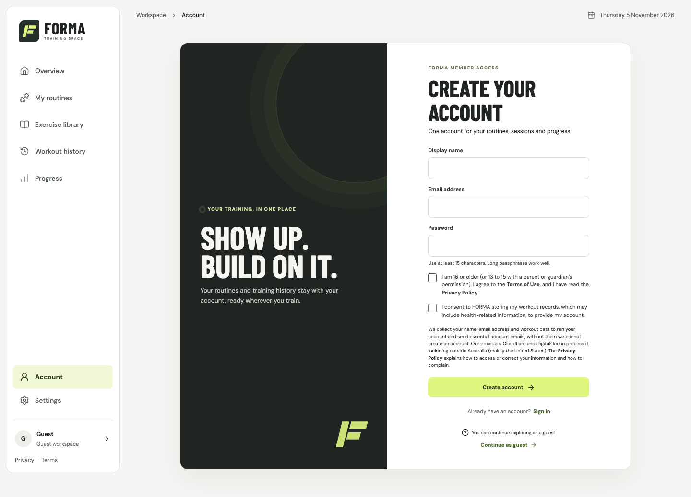
1440px · auth-forgot

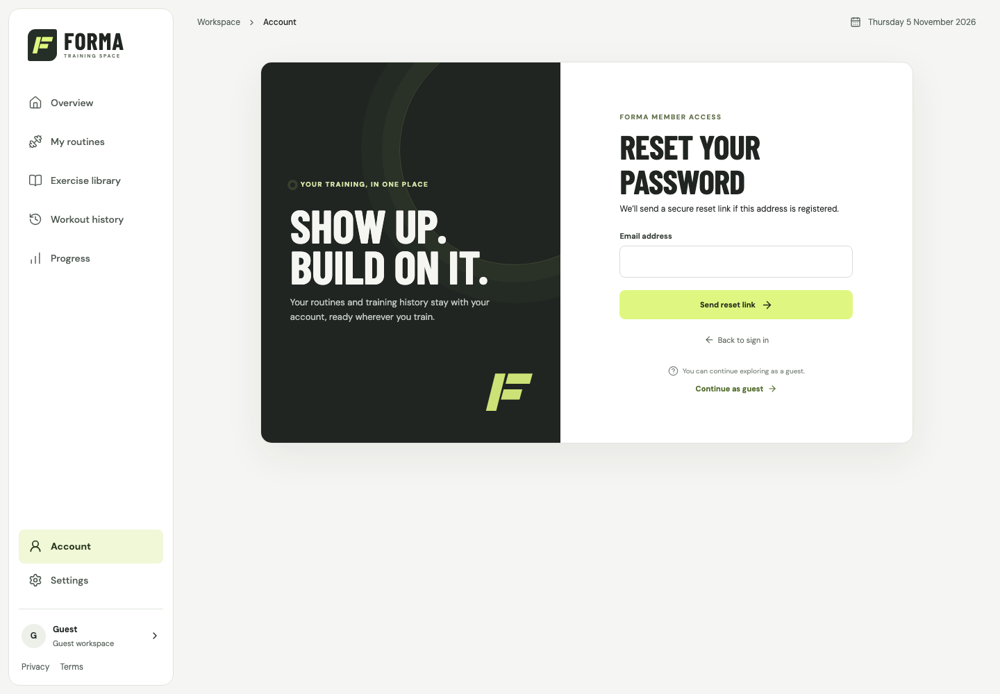

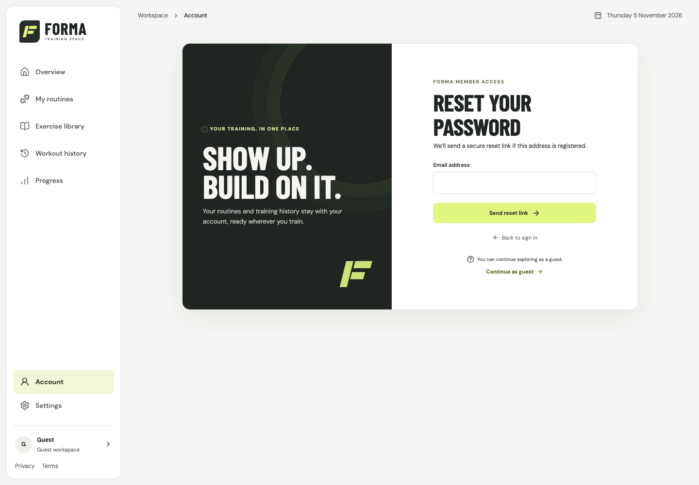
1440px · overview


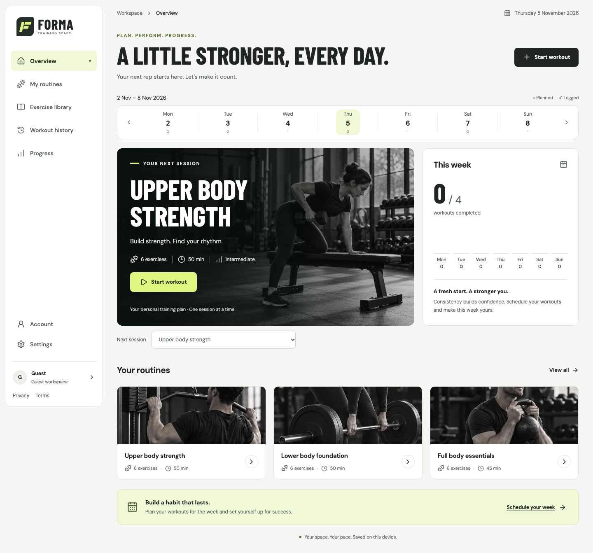
1440px · library

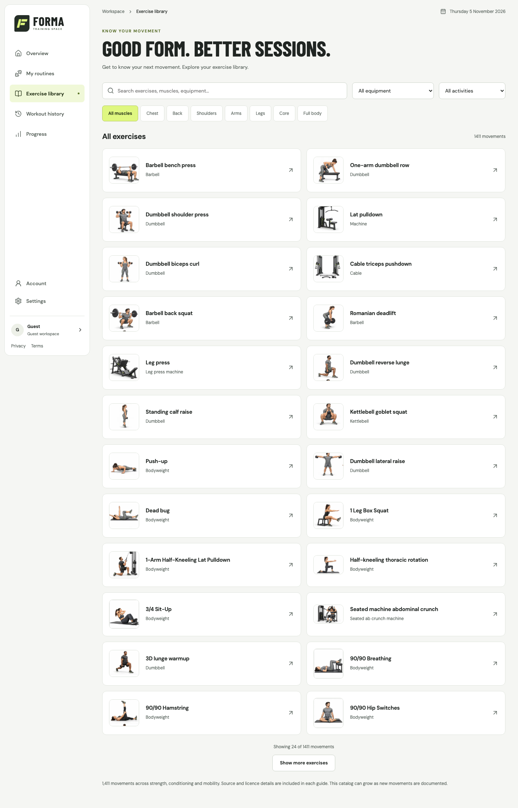

1440px · progress

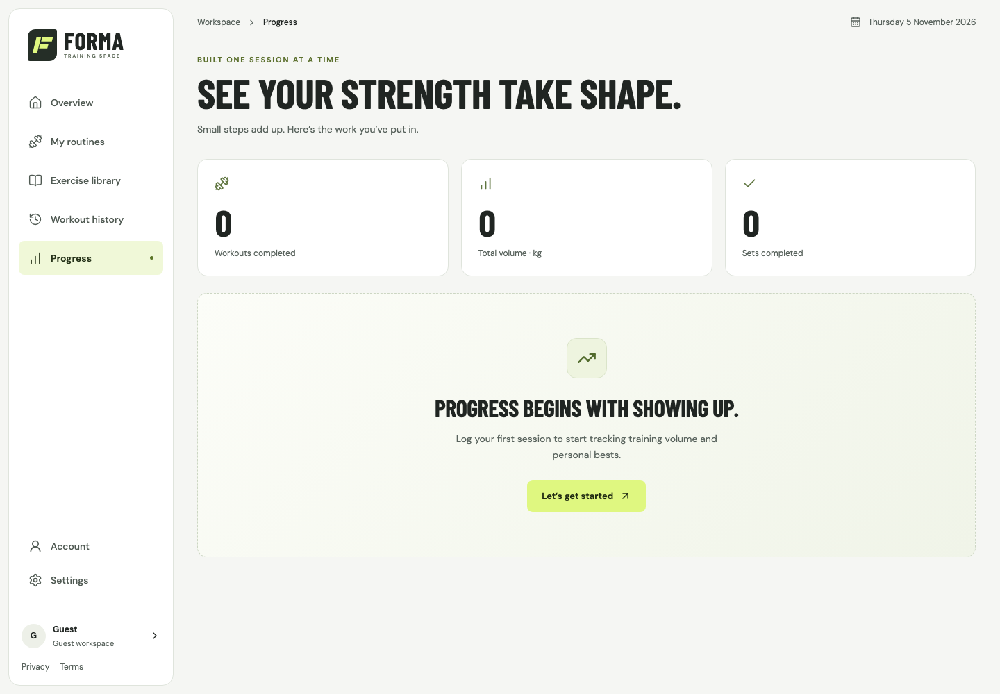

1440px · privacy

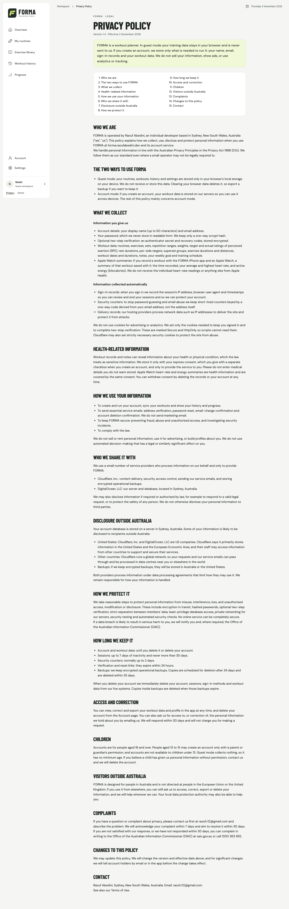

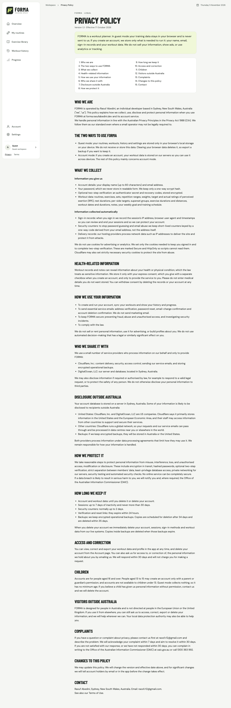
Anonymous read-only smoke only. No account submissions, member-data writes, new accessibility certification, physical Safari or performance claim. This document uses local relative images and inline CSS, with no scripts, external fonts, dependencies or remote requests.